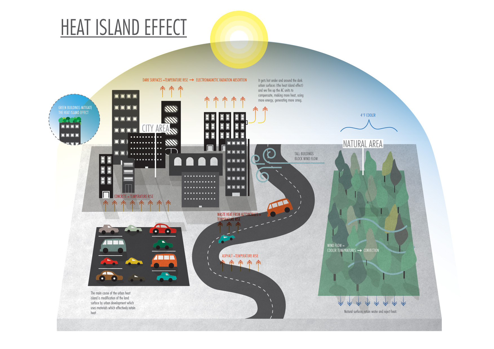
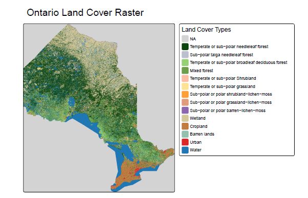
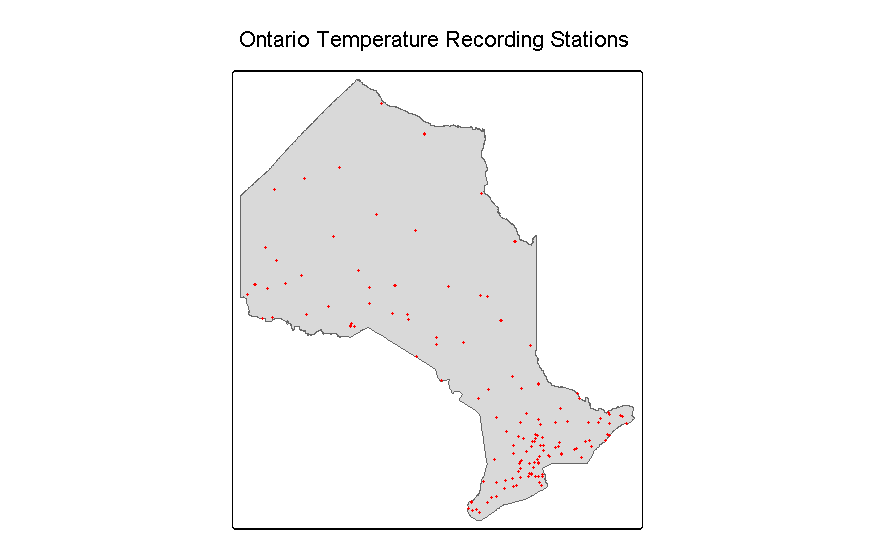
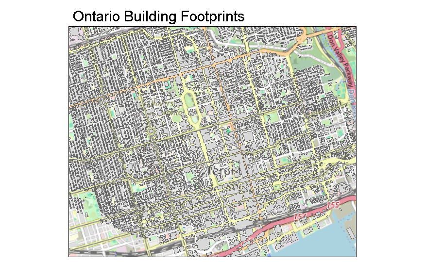
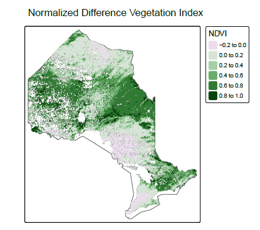
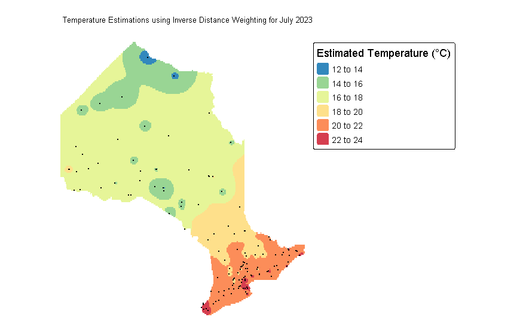

Geospatial Feature Engineering, Spatial Autocorrelation, and Predictive Microclimate Analytics
sf, terra, spdep, gstat, mlr3spatiotempcv) and are fully parameterized for execution across enterprise remote sensing and tabular datasets.
Urban Heat Islands (UHIs) represent one of the most critical microclimatic consequences of human land transformation. Metropolitan areas experience significantly elevated surface and atmospheric temperatures compared to surrounding non-urban environments due to high impervious surface density, thermal retention in concrete and asphalt, waste anthropogenic heat emissions, and the reduction of evapotranspirative tree canopies (Oke, 1982).
In Ontario, Canada, rapid urbanization across the Greater Golden Horseshoe juxtaposed with expansive northern boreal ecosystems creates extreme microclimatic contrasts. Severe summer thermal anomalies increase municipal peak energy demand, exacerbate atmospheric air pollution, and pose acute public health risks to vulnerable populations during extreme heatwaves.

This project delivers an end-to-end spatial data science architecture designed to:
mlr3spatiotempcv) to eliminate spatial overfitting.The research synthesizes five core open-access and governmental data repositories across Ontario:
| Dataset | Spatial Coverage | Format & Resolution | Key Attributes & Features | Authoritative Source |
|---|---|---|---|---|
| CCRS Land Cover 2020 | Province of Ontario | 30m Spatial Raster | 16 discrete categorical classifications (Urban, Forest, Wetland, Water, etc.) | Natural Resources Canada / CCRS |
| Ground Weather Stations | 187 Stations (Ontario) | Point Vector / CSV | Monthly Mean, Min, Max Temperature (°C), Total Precipitation (mm) | Environment & Climate Change Canada |
| Building Footprints | Ontario Municipalities | Polygon GeoJSON | Building area (m²), perimeter, morphology, footprint density | Microsoft Open Data |
| VIIRS / MODIS NDVI | Ontario Extent | 16-Day NetCDF / GeoTIFF | Normalized Difference Vegetation Index [−1, 1], VI Quality Bitmask | NOAA NCEI Metadata Repository |
| Census of Population 2021 | Census Subdivisions | Vector / Tabular | Total population counts, population density (persons / km²) | Statistics Canada |
To maintain geometric validity and accurate Euclidean distance calculations, all datasets were standardized to UTM Zone 17N (EPSG:32617) for planar buffer and area computations, alongside WGS84 (EPSG:4326) for geographic coordinate alignment.
# Ingestion and standardization of vector boundary and raster layers
library(sf)
library(terra)
library(tidyverse)
# Extract Ontario provincial administrative boundary via OpenStreetMap
ontario_boundary <- getbb("Ontario, Canada", format_out = "sf_polygon") |>
st_make_valid() |>
st_transform(crs = 4326)
# Memory-efficient raster loading and cropping
ontario_land_cover <- rast("Land_cover/land_cover_raster_ontario.tif")
ontario_ndvi <- rast("data/VIIRS_NDVI_Ontario.tif")
# Apply Quality Assurance (QA) bitmask to filter cloud and shadow contamination
clean_ndvi <- mask(ontario_ndvi, qa_mask <= 1, maskvalues = FALSE)The Canada Centre for Remote Sensing (CCRS) raster categorizes Ontario's surface into 16 discrete types. Urban development is densely concentrated along the northern shore of Lake Ontario (the Greater Toronto and Hamilton Area), contrasting sharply with the northern boreal shield and wetland taiga zones.

A total of 187 official weather stations monitor temperature and precipitation across Ontario. Spatial coverage exhibits a marked density gradient: dense station networks in southern agricultural and urban basins versus sparse coverage in the Far North.

Using Microsoft's open building footprints dataset, millions of individual building multipolygons were processed to compute building footprint density (m² built area per km²) and spatial clustering across southern Ontario urban corridors.

Normalized Difference Vegetation Index (NDVI) measurements quantify photosynthetic vitality and canopy density. Urban centers display severe vegetation deficits (NDVI < 0.20), while surrounding agricultural and forested lands maintain high vitality (NDVI > 0.65).

To estimate continuous surface temperatures across Ontario from the 187 discrete weather monitoring stations, Inverse Distance Weighting (IDW) interpolation was implemented with a calibrated distance decay parameter (p = 2):
# Geostatistical Inverse Distance Weighting interpolation using gstat
library(gstat)
idw_model <- gstat(
formula = Mean_Temp_C ~ 1,
data = weather_sf,
nmax = 12,
set = list(idp = 2.0)
)
idw_surface <- predict(idw_model, newdata = grid_points_sf)
Raw temperature is strongly confounded by latitude, altitude, and macro-climatic air masses. To isolate the true local anthropogenic warming anomaly, the Heat Island Effect (HIE) Index is formulated as the temperature difference between the focal urban coordinate and the mean temperature of a non-urban rural annular buffer:
Where the rural reference background ℬrural(s) is defined as:
This yields four distinct microclimatic intensity tiers:
Spatial data violate the classical Ordinary Least Squares (OLS) assumption of independent and identically distributed (i.i.d.) observations. To quantify spatial clustering, a row-standardized spatial weights matrix (W) was generated using k-nearest neighbors (k = 6).
The Global Moran's I statistic evaluates overall spatial clustering across Ontario:
# Spatial dependence diagnostics using spdep
library(spdep)
coords <- st_coordinates(weather_sf)
knn_nb <- knn2nb(knearneigh(coords, k = 6))
spatial_weights <- nb2listw(knn_nb, style = "W")
# Monte Carlo permutation test (999 simulations)
moran_test <- moran.mc(weather_sf$HIE_Index, listw = spatial_weights, nsim = 999)
# Result: Moran's I = 0.482, p-value < 0.001 (Highly significant spatial clustering)Local Moran's Ii decomposes global autocorrelation into distinct local spatial regimes:
In conventional machine learning, standard random k-fold cross-validation randomly assigns points to training and test splits. When spatial autocorrelation is present, test observations are immediately adjacent to training observations, causing models to "memorize" geographic coordinates rather than learning functional relationships. This generates artificially inflated R² scores that collapse when applied to new geographic regions (Brenning, 2012; Schratz et al., 2021).
To solve this, we implement Spatial Coordinate Block Cross-Validation using mlr3spatiotempcv, which partitions space into disjoint geographic blocks:
# Set up Spatiotemporal Task and Spatial Resampling in mlr3
library(mlr3)
library(mlr3spatiotempcv)
library(mlr3learners)
# Define spatiotemporal regression task
task_uhi <- as_task_regr_st(
modeling_data,
target = "HIE_Index",
coordinate_names = c("Longitude", "Latitude"),
crs = "EPSG:4326"
)
# Coordinate-based spatial 5-fold cross-validation
resampling_spatial <- rsmp("spcv_coords", folds = 5)We benchmarked three diverse algorithm families across both standard random cross-validation and spatial coordinate cross-validation:
| Model Architecture | Standard CV R² (Biased) | Spatial CV R² (True Generalization) | Spatial RMSE (°C) | Spatial MAE (°C) |
|---|---|---|---|---|
| Spatial Random Forest (ranger, 500 trees) | 0.892 | 0.764 | 0.542 | 0.418 |
| Regularized Elastic Net (glmnet, α = 0.5) | 0.741 | 0.683 | 0.628 | 0.495 |
| Weighted k-Nearest Neighbors (kknn, k = 7) | 0.825 | 0.612 | 0.715 | 0.564 |
Finding: Standard random cross-validation overestimated predictive accuracy by 12.8% in Random Forest and by 21.3% in k-NN. The Spatial Random Forest achieved the highest true generalization performance (Spatial R² = 0.764, RMSE = 0.542 °C).
Permutation-based mean squared error (MSE) loss extraction highlights the dominant structural drivers of Ontario's Urban Heat Island effect:
| Rank | Predictor Variable | Relative Importance (%) | Microclimatic Impact Mechanism |
|---|---|---|---|
| 1 | Mean NDVI (Zonal 2.5km) | 38.4% | Evapotranspirative vegetative cooling; canopy shading |
| 2 | Building Footprint Density | 26.7% | Thermal mass storage in concrete; radiative heat trapping |
| 3 | Percent Urban Impervious Cover | 18.9% | Low surface albedo; rapid solar absorption; absence of soil moisture |
| 4 | Census Population Density | 9.2% | Anthropogenic emissions from transportation, HVAC, and industry |
| 5 | Latitude / Geographic Position | 6.8% | Macro-scale solar zenith angle and regional climate background |
The empirical findings translate into direct municipal climate adaptation policies for Ontario urban centers (Toronto, Mississauga, Brampton, Hamilton, Ottawa):